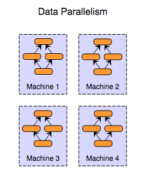

Final Writeup
DistNet - Summary
Distnet displays various techniques used in parallelizing high-accuracy
Convolutional Neural Network using a distributed training algorithm on a cluster of
nodes and a parameter-server architecture leveraging socket communication.
The main goal is to find out which approach is beneficial in which scenario in
achieving similar accuracy as non-distributed training in lesser amount of time.
Background
Neural networks are a set of algorithms, modeled loosely after the human brain, that are designed to recognize patterns. They interpret sensory data through a kind of machine perception, labeling or clustering raw input. The patterns they recognize are numerical, contained in vectors, into which all real-world data, be it images, sound, text or time series, must be translated. Deep neural networks have more than a single hidden layer between the input and the output layer. Training the neural network is done through gradient descent and backpropagation. Deep neural networks with multiple convolution layers and followed by fully connected layers takes a long time to train due to the varying learning rates. To achieve high accuracy, the amount of data fed into these networks is extremely high, making the time for each epoch high. Training AlexNet on a single GPU(NVIDIA K20) takes about 100 epochs (6 days). Long training times for high-accuracy deep neural networks (DNNs) impede research into new DNN architectures and slow the development of high-accuracy DNNs. Hence, we would like to explore the use of a cluster of GPU machines to accelerate the learning. The speed and scalability of distributed algorithms is almost always limited by the overhead of communicating between servers; DNN training is not an exception to this rule. Therefore, the key consideration here is to reduce communication overhead wherever possible, while not degrading the accuracy of the DNN models that we train.
Parallelism Axis
Parallelism in the training deep neural networks can be explored along two axes. Depending on the architecture and communication
model we choose, the parallelism axis will affect the speedup that can be achieved by learning on a cluster as opposed to a single node.
The two kinds of parallelism are :
- Model Parallelism:
In this type of Parallelism different parts of the model that is being learnt in the neural network are computed by different
machines in the distributed system. Model parallelism is efficient when the amount of computation per neuron
activity is high, because neuron activity is the unit being communicated.

- Data Parallelism:
In this type of parallelism each machine in the distributed system has a copy of the entire model but the data
to be trained upon is distributed over the machines and the results are combined from each. Data parallelism is efficient when the
amount of computation per weight is high, because the weight is the unit being communicated.

Approach
| Item |
Description |
| Dataset |
CIFAR-10. We chose this because it can be used for training in a suitable amount of time to get a high accuracy |
| Architecture |
AlexNet |
| Language |
Python |
| Machine Intelligence Library |
TensorFlow |
| Target Machines |
Nodes with atleast a single GPU |
| Message Passing |
Native Socket Communication |

Challenges
- Deciding on a reliable and fast communication mechanism. Many of the wrappers around low-level sockets come with overheads and poor reliability(for eg. python bindings for MPI.
Hence, we decided to use the low-level socket API directly, and write explicit functions to safely receive all the intended data
- Due to limitations of time and resources, we are implementing a distributed training algorithm for a relatively smaller data set - CIFAR-10. This allows us to spend sufficient time in
developing the distributed algorithms rather than waiting for the training to complete. The results of these smaller data sets will reflect even more positively
for larger data sets(more machines, more data in working set).
- Our parameter server implementation uses multiple processes, shared memory and queues, as opposed to multi-threading, this is because
a multi-threading pythonic server cannot utilize multiple cores because of the Global Interpreter Lock
- Splitting the tensorflow computation graph without tensorflow knowing about it is a difficult task. Multiple partial runs on the same graph are not fully supported, because of which we had to
ensure that we call compute and apply gradients on two different machines for all our implementations.
Preliminary Results with GTX 1080
We did the correctness testing with the Nvidia GTX 1080 present in Gates Machines. Since communication between different Gates machines is difficult to achieve, we simulated multiple machines
on a single node by launching multiple tensorflows that shared the GPU. Asynchronous performs better than other synchronous and locking mechanisms. The advantage of asynchronous will be even more
pronounced when many more workers are used. The following graph represents the amount of time it took for each implementation to reach 86.1% accuracy.
AWS Cluster Results
We tested the baseline on a single node with Nvidia K520 and the synchronous distributed version as well as the asynchronous immediate update but no-wait model with two workers
and one parameter server. Both distributed versions achieve the same accuracy as baseline in half the amount of time. The only slight difference in running times of synchronous and asynchronous is due to the less number
of workers. Also, unlike in GTX 1080, our baseline code here achieved an accuracy of 85.5, since the K520 are slower GPUs, and it takes much longer to achieve the same accuracy even in
baseline implementation. We also see that both the distributed version and non-distributed versions have similar fall of the curve for loss, but the issue with stopping
the non-distributed training, but since it is batched gradient descent, it has likely seen lesser data to create a better model.
Pending Tests
- Testing the limits of data parallelism for CIFAR-10 dataset by scaling to even more nodes. This will also show us the true benefits of asynchronous
stochastic gradient descent over a synchronous version
- We also believe the multiple parameter server will prove useful in a scenario where you have many more workers,
hence we like to run our multi-parameter server implementation on a cluster of AWS instances